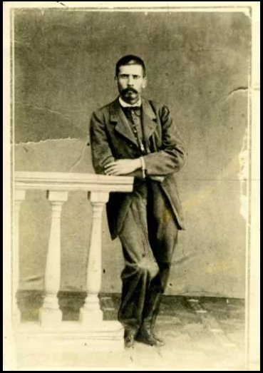
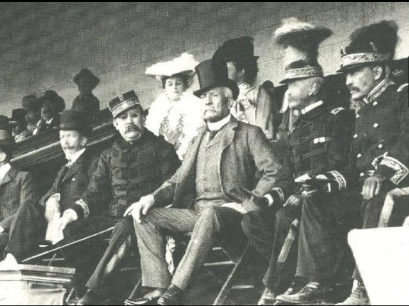
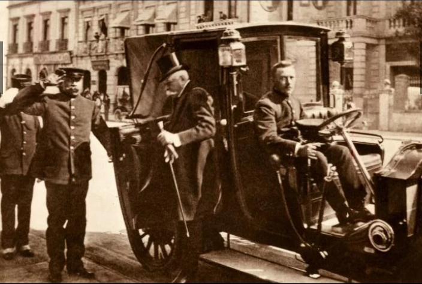
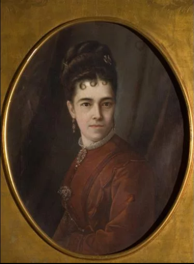
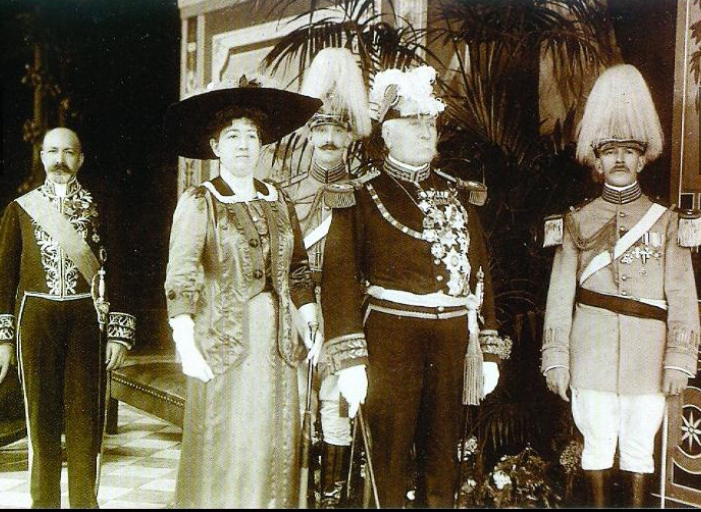

Datos Curiosos

1) Huérfano a temprana edad
Cuando tenía 3 años de edad, su padre murió víctima de la epidemia de cólera que atacó la ciudad de Oaxaca.
2) ¿Cambió el grito de Independencia?
Aprovechando la celebración del Centenario de la Independencia, se dice que Díaz cambió el tradicional Grito de la Independencia del 15 al 16 de Septiembre para que coincidiera con su cumpleaños. Anteriormente el Grito se daba el día 16 en la mañana.
3) Su apodo
Fue apodado despectivamente como "EL llorón de Icamole" tras retirarse llorando al perder la batalla con los lerdistas en Icamole, Nuevo León, el 10 de Marzo de 1876.
4) Enamorado de su sobrina
Estaba tan enamorado de Delfina Ortega que solicitó una absolución de parentesco para poder casarse con ella, pues se trataba de su sobrina, hija de su hermana, Manuela Díaz Mori.
5) Era masón
Ingrsó al grupo al que pertenecía Benito Juarez y alcanzó el grado 33 que es la máxima posición de la masonería.